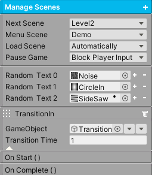
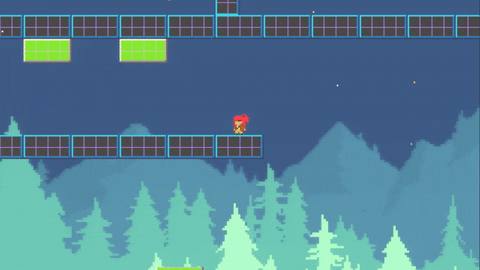

Scene Management
Transition from the current scene to the next scene with ease. The scene manager loads the specified scene and controls the screen transitions, if any. The system comes equipped with plenty and ready to use screen transitions, which can be found in the AssetsFolder/Transitions/Prefabs folder. Simply drag the necessary prefabs into the Hierarchy and set their reference in the ManageScenes component.
Each transition gameobject consists of a canvas with an image that contains a Transition shader. The system implements the common technique of using a black and white gradient texture to specify the pattern of the transition. If desired, you can add your own gradients to a new material to create new transitions.
To get started, place a ManageScenes component on a gameobject, organize the scene transition gameobjects as children, set the references, and simply call the LoadNextScene() to load the next scene.
The system also comes with the ScreenTransition component, which is useful for displaying opening scene transitions and transitions for a game reset (where the game resets but doesn’t change scenes).
{kind=link}
Note
Click the add button to add transitions into the system. The types are TransitionIn, TransitionOut, and LoadScene.
Property |
|
|---|---|
Next Scene |
If there are scenes in the build, specify which scene to transition to when LoadNextScene() is called. |
Menu Scene |
If there are scenes in the build, specify the menu scene to transition to when LoadMenuScene() is called. |
Load Scene |
If Automatically is enabled, once the scene has finished loading, it will transition completely into the new scene. If OnUserInput is enabled, once the scene is finished loading, the scene will wait for any user input before transitioning completely. |
Pause Game |
If Pause Game is enabled, the game will be paused during a scene transition. |
Random Text |
If more than one texture exists, the transition pattern will be randomized. Place textures here from the AssetsFolder/Transitions/Textures folder. Use the TransitionAny prefab if implementing this. |
Transition In/Out. |
This gameobject will be set active true if it exists. If this object is a transition, the transition pattern will reach complete coverage on Transition In. It will reach complete transparency on Transition Out. If Deactivate is enabled, this gameobject will be set active false when the Transition Time expires. |
Load Scene |
After the transitions complete, this step will finally begin to load the scene. The gameobject, if it exists, will be set active true. This object can be a loading scene (which is not a transition). By changing the load speed, this will slow down the loading. A value of 1 is maximum speed. |
Events |
|
|---|---|
On Start |
The Unity Event invoked when a Transition or Load Scene starts. |
On Complete |
The Unity Event invoked when a Transition or Load Scene completes. |
Loading Progress Float |
This Unity Event is invoked with a percentage of the loading time. This can be used to set UI elements. |
Loading Progress String |
This Unity Event is invoked with a percentage of the loading time in string format. This can be used to set UI elements. |
Method |
|
|---|---|
LoadNextScene() |
The next scene will be loaded. |
LoadMenuScene() |
The menu scene will be loaded. |
LoadScene(string sceneName) |
The specified scene will be loaded. |
Screen Transition
Place the ScreenTransition component on a transition gameobject. This will primarily be used for the opening scene transition and for game reset transitions. If using it for an opening scene transition, make sure the gameobject is set active true so it executes automatically at the beginning of the scene.
If using it for a game reset, simply activate the gameobject for the transition to begin. When a transition completes, the gameobject will be automatically be set active false;
Property |
|
|---|---|
Type |
If Transition In, the transition will reach maximum coverage. If Transition Out, the transition will reach complete transparency. If Both, the system will execute TransitionIn and TransitionOut in that order. |
Time |
The duration of the transition. |
Reset Game |
If enabled and type is Both, the game will be reset after Transition In completes and before Transition Out begins. Time scale will be set to zero during the first half, effectively pausing the game. |
Random Text |
If more than one texture exists, the transition pattern will be randomized. Place textures here from the AssetsFolder/Transitions/Textures folder. Use the TransitionAny prefab if implementing this. |